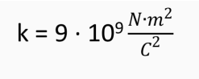

- F: fuerza eléctrica de atracción o repulsión en Newtons (N). Las cargas iguales se repelen y las cargas opuestas se atraen.
- k: es una constante de proporcionalidad llamada constante de la ley de Coulomb. No se trata de una constante universal y depende del medio en el que se encuentren las cargas. En el vacío tiene un valor de 9·109 N·m2·C-2 en unidades del S.I.
- q: valor de las cargas eléctricas medidas en Coulomb (C)
- r: distancia que separa a las cargas y que es medida en metros (m).
- Cabe destacar que la permitividad eléctrica del vacío es constante, y una de las más empleadas.
- El valor de la constante de Coulomb en el Sistema Internacional de medidas es:

Esta ley solo toma en cuenta la interacción entre dos cargas puntuales al mismo tiempo. Asimismo, solo determina la fuerza que existe entre q1 y q2, sin considerar las cargas alrededor.
Coulomb logró determinar las propiedades de la fuerza electrostática al desarrollar como instrumento de estudio una balanza de torsión. Esta balanza consiste en una barra que colgaba sobre una fibra con la capacidad de torcerse y volver a su posición inicial.
De esta manera, Coulomb podía medir la fuerza que se ejercía sobre un punto de la barra al colocar varias esferas cargadas a diferentes distancias con el fin de medir la fuerza de atracción o repulsión según girara la barra.